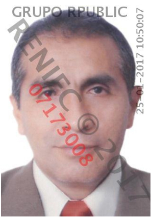
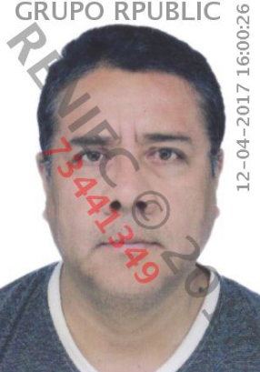
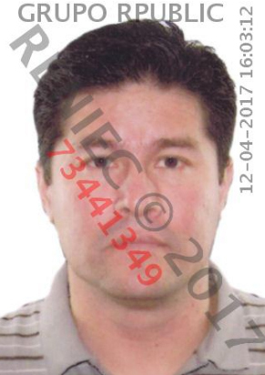
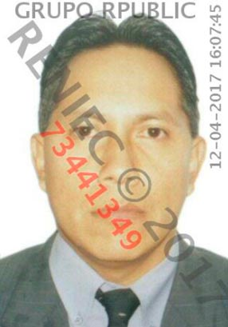
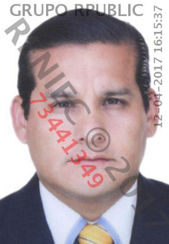
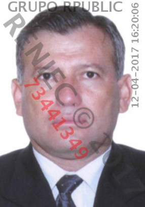
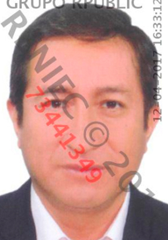
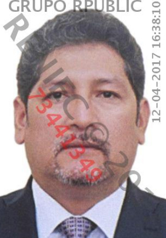

INVOLUCRADOS

Antero Milian Díaz
Ingeniero. Presidente del Comité Especial del proyecto Costa Verde Tramo Callao, designado en ese cargo por el Gobierno Regional del Callao en julio del 2013. Convocó a licitación pública sin considerar que el expediente de contratación no cumplía con los requisitos establecidos por la Ley de Contrataciones del Estado.
Nancy Milagros Suito Meza
Arquitecta. Miembro del Comité Especial del proyecto Costa Verde Tramo Callao desde julio del 2013 hasta abril del 2014. Convocó a licitación pública sin considerar que el expediente de contratación no cumplía con los requisitos establecidos por la Ley de Contrataciones del Estado.

Jorge Avilés Astudillo
Contador. Miembro del Comité Especial del proyecto Costa Verde Tramo Callao desde julio del 2013 hasta abril del 2014. Convocó a licitación pública sin considerar que el expediente de contratación no cumplía con los requisitos establecidos por la Ley de Contrataciones del Estado.
INVOLUCRADOS EN ADICIONALES A LA OBRA

Dante Reynaldo Rodríguez Mogrovejo
Jefe de la oficina de Construcción de la Gerencia Regional de Infraestructura del Callao desde enero del 2015.
Contraloría lo acusa de no cumplir con la función de verificar que Odebrecht respetara lo establecido en el expediente técnico establecido en el contrato y el expediente técnico del presupuesto adicional (en la quinta adenda), con lo que violó las normas del Gobierno Regional del Callao.
Helberth Alfredo Barrera Bardales
Ingeniero. Coordinador del proyecto Costa Verde Tramo Callao, designado en diciembre del 2012. Contraloría lo acusa de no cumplir con el Manual de Organización y Funciones del Gobierno Regional del Callao. No supervisó que Odebrecht cumpliera con el expediente técnico establecido en el contrato ni verificó el control de calidad de la supervisión.

Roberto César Sandoval Guzmán
Jefe de la oficina de Construcción y Vialidad de enero del 2013 a enero del 2015. No gestionó ni advirtió la disponibilidad física del terreno donde se ejecuta la obra, lo que provocó la aprobación de ampliaciones de plazo por 134 días y mayores pagos al contratista y supervisor por 16 millones de soles. Incumplió con las funciones establecidas en el Manual de Organización y Funciones del Gobierno Regional del Callao y permitió a Odebrecht incumplir con el expediente técnico.
Nancy Margarita Villela Alvarado
Gerente regional de Infraestructura del Gobierno Regional del Callao desde enero del 2015. Contraloría detectó que no cumplió con verificar que Odebrecht respetara el expediente técnico establecido en el contrato. Tampoco verificó, según informe de la Contraloría, el control de calidad de la supervisión de la obra.

Jorge Linares Muñoz
Gerente general Regional del Callao desde mayo del 2015. No cauteló el plazo de la obra a cargo de Odebrecht ni advirtió que debió modificar el contrato de acuerdo a lo resuelto por la Contraloría General de la República antes de la ejecución y pagos adicionales. Con ello incumplió el Manual de Organizaciones y Funciones del Gobierno regional del Callao.
Marco Antonio Palomino Peña
Gerente de la gerencia de Asesoría Jurídica del Gobierno Regional del Callao desde diciembre de 2014. No advirtió que debía modificarse el contrato con Odebrecht de acuerdo a lo resuelto por la Contraloría General de la República sobre la ejecución y pago adicional en la obra.

Eber Adalberto Ramírez Sánchez
Gerente regional de Planeamiento, Presupuesto y Acondicionamiento Territorial del Gobierno Regional del Callao desde enero del 2011 hasta marzo del 2016. No cauteló el plazo de Odebrecht estipulado en el contrato para cumplir con la obra, ni advirtió si el Gobierno Regional del Callao contaba con presupuesto para asumir gastos adicionales de la obra.
Teresa Loayza Daniel Leiva
Abogada. Asesora legal de la gerencia Regional de Infraestructura del Gobierno Regional del Callao desde enero del 2016. No advirtió que se debía modificar el contrato con Odebrecht de acuerdo a lo resuelto por la Contraloría General de la República sobre pagos adicionales.
Daniel Lombardo Sánchez Calderón
Jefe de la oficina de Presupuesto y Tributación de la Gerencia Regional de Planeamiento, Presupuesto y Acondicionamiento Territorial del Gobierno Regional del Callao desde enero del 2011 hasta marzo del 2016. No advirtió sobre la disponibilidad presupuestaria para atender los gastos adicionales de la obra.
Patricia Eliana Martínez Valdivieso
Gerente de Asesoría Jurídica desde enero del 2013 hasta diciembre del 2014. Cesada de su cargo por visar la resolución que aprobó las bases de la licitación pública sin advertir que debía contarse con la disponibilidad física del terreno. Incumplió el Manual de Organización y Funciones del Gobierno Regional del Callao.
Rowland Cuya Coronado
Gerente de Administración del Gobierno Regional del Callao desde enero hasta diciembre del 2013. Cesado por visar la resolución que aprobó el expediente de contratación de la obra Costa Verde Tramo Callao, pese a que no contaba con la documentación que acreditaba la libre disponibilidad física del terreno.

Andrés Miguel Villarreyes Dávila
Gerente Regional de Infraestructura desde enero hasta diciembre del 2013. Cesado por estar involucrado en la aprobación del expediente de contratación sin advertir que no se contaba con la libre disponibilidad física del terreno para la construcción de la obra.
Víctor Alipio Suelpres Jerez
Jefe de la oficina de Logística desde enero hasta diciembre del 2013. Cesado por estar involucrado en la aprobación del expediente de contratación sin advertir que no se contaba con la libre disponibilidad física del terreno para la construcción de la obra. Actualmente es responsable de Transparencia.

Jorge Fernando Villarreal Ruiz
Gerente de la gerencia Regional de Transporte y Comunicaciones del Gobierno Regional del Callao desde enero del 2014. No advirtió que las modificaciones en la obra Costa Verde Tramo Callao no se ajustaban a las disposiciones del Manual de Diseño Geométrico de Carreteras DG-2001.
Carmen Sofía Leyva Balcázar
Ingeniera de Transportes del área de Evaluación de Manejo de la Unidad de Licencias de Conducir del Gobierno Regional del Callao desde marzo hasta diciembre del 2014. Aseguró que modificaciones en las obras de la Costa Verde Tramo Callao eran viables, sin advertir que no se ajustaban a las disposiciones del Manual de Diseño Geométrico de Carreteras DG-2001.